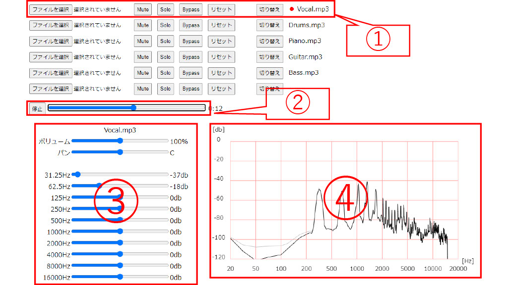

シミュレータ教材の学び方
1,エフェクターの説明のページへ行き、エフェクターの効果と変化を文字を読んで確認します。
2,シミュレータのページに行き、あらかじめ用意された音源とパラメーターのプリセットでエフェクターの効果のオン・オフを切り替えたり、パラメーターを変えるなどをして、その変化を聞いて確認します。
3,各自が持っている音源を読み込み、実際にパラメーターを調整して、エフェクターの理解を深めていきます.
シミュレータの使い方
①ここは音源を操作するコントローラーです。最大で6つの音源を操作することができます。
「ファイルを選択」を押すことで音声ファイルを読み込むことができます。読み込める音声ファイルの形式はmp3、oggのみとなります。
「Mute」でその同じ縦の列の音源をミュートすることができます。ミュート中はボリュームの操作ができなくなります
